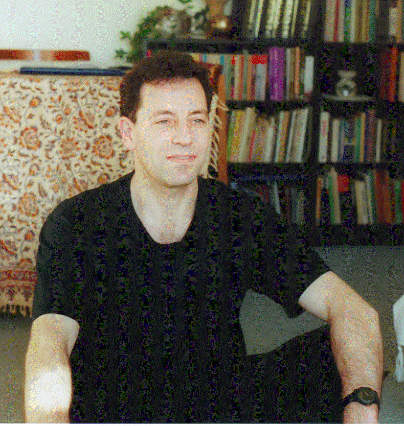

Rajmil Fischman was born in Lima, Peru, 1956, attended musical studies at the National Conservatory of Lima, at the Rubin Academy - Tel Aviv University (1983-85) and at York University, where he obtained a DPhil in 1991. He studied composition with Abel Ehrlich (Rubin Academy) and with John Paynter and Richard Orton (York). He also obtained a BSc in Electrical Engineering from the Israel Institute of Technology (1980). While at York, he joined the Composers Desktop Project (CDP), becoming a director between 1988 and 1995. In 1988 he was appointed lecturer at Keele University, where he established the Diploma and MA/MSc courses in Digital Music Technology and a purpose built Computer Music Laboratory. His main activities focus on instrumental and electroacoustic music composition, electroacoustic music theory and music software developement. He was also artistic director and principal conductor of the Keele Philharmonic Society between 1990 and 1995. His compositions have received international performances and broadcast in several countries, including Argentina, Australia, Brazil, Canada, Finland, Hong Kong, Israel, Slovakia and the UK.
Rajmil Fischman
Lecturer
Music Department
Keele University
Keele Staffs
ST5 5BG
UK
Tel: +44-1782-583297
Fax: +44-1782-583295
Email: r.a.fischman@cc.keele.ac.uk